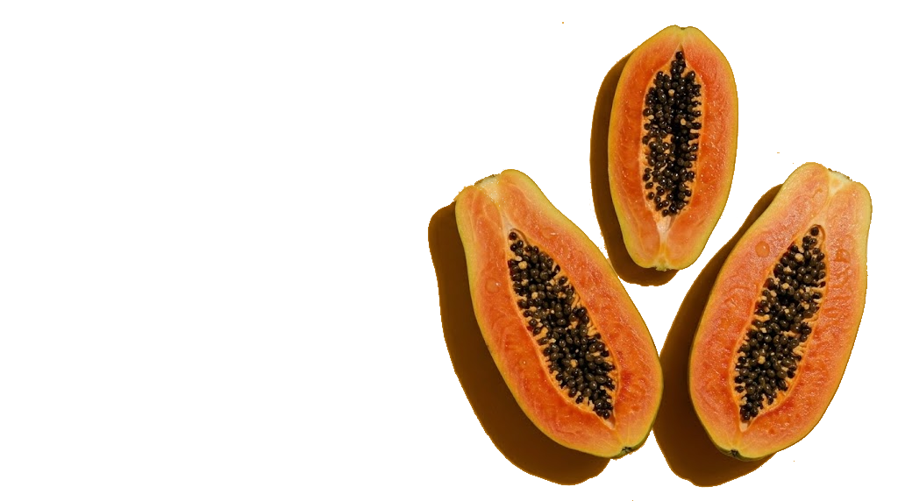
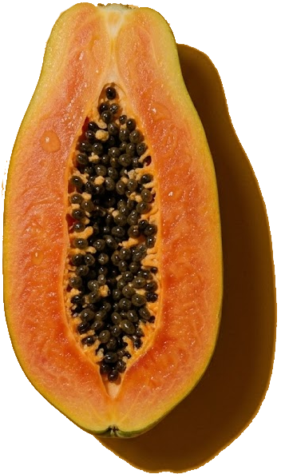

Valores por 100g de mamão formosa cru (Tabela TACO)
Descubra como escolher, conservar e aproveitar ao máximo seu mamão formosa
Cada parte do mamão formosa trabalha para melhorar sua qualidade de vida
Rico em potássio e fibras que ajudam a regular a pressão arterial.
Enzimas naturais papaina e quimopapaina facilitam a digestão.
Mais vitamina C que a laranja, estimulando anticorpos.
Antioxidantes combatem radicais livres e promovem colágeno.
Betacaroteno e luteína protegem a retina.
Baixo índice glicêmico regula a liberação de açúcar.
Propriedades anti-inflamatórias para artrite e dores.
Licopeno e flavonoides protegem células contra danos.